Urban Visualization I
Flows, Time & Interactivity (2D + Time) - CS-GY 6313 - Fall 2026
2026-10-30
From Static Maps to Dynamic Urban Systems
The Yellow Blob Problem
What happens when we apply static techniques to massive urban datasets?
This is one week of NYC taxi trips (about 3.5 million) drawn as points on a map.
What can you learn from this?
Nothing. It’s a “yellow blob.”
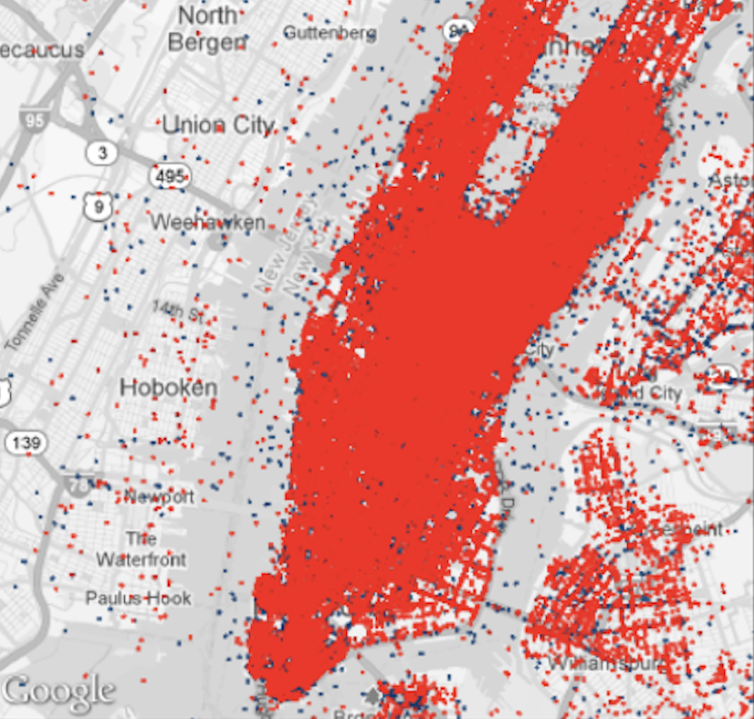
Today’s Goal
Learn to visualize urban dynamics—movement and time—using interactive, linked views
- Challenge: Urban data is massive, dense, and dynamic
- Solution: Turn visualization into an exploration tool
- Case Study: TaxiVis—a system for exploring NYC taxi flows
We’ll learn how to move from this “yellow blob” to meaningful insights about urban mobility patterns.
Part 1: The Urban Context
Why This Matters
The Urban Challenge:
- Over 50% of world’s population in cities
- +2.5 billion more by 2050
- Cities = centers of innovation
- But also: sprawl, pollution, inequality
How do we make better decisions about urban development?
The Data Opportunity:
- We can now collect, store, and open massive urban datasets
- Benefits:
- Government: Operations & planning
- Science: Discovery
- Residents: Participation
- Industry: Innovation
What Makes Urban Data Unique?
Three Interacting Components:
- Residents - People and their behavior
- Infrastructure - Physical systems and policies
- Environment - Natural and built surroundings
To understand a city, we must explore how these interact over space and time.
Four Key Characteristics:
- Scale
- Human-level to metro-level
- Millions of individual events
- Density
- Massive overplotting
- Traditional techniques fail
- Complexity
- Interconnected systems
- Transit, traffic, social networks
- Dynamism
- Cities defined by time & movement
- Static snapshots miss the essence
Hägerstrand’s Space-Time Cube (1970)
The Classic Framework for Movement Analysis
- X, Y dimensions: Geographic space
- Z dimension: Time
- Each person’s life: a line through the cube
The Urban Challenge:
Understanding millions of these paths, all interacting simultaneously
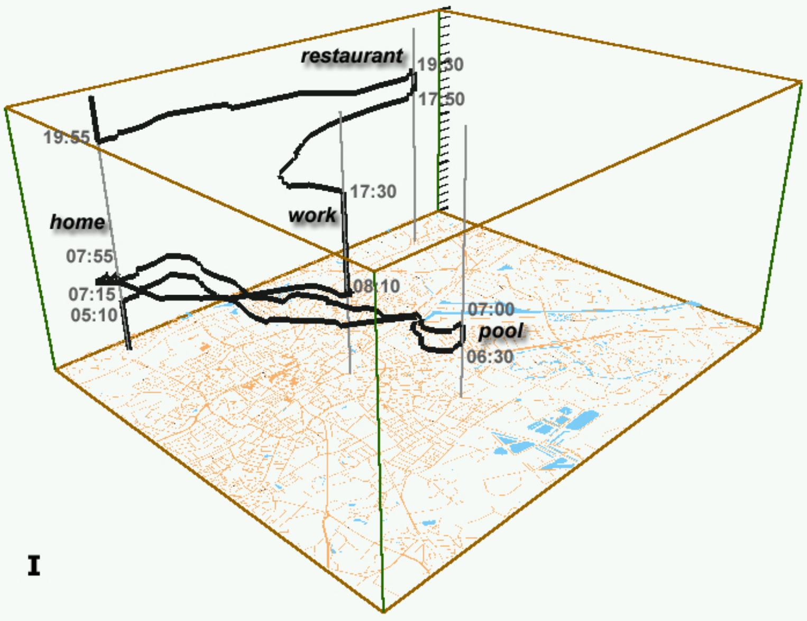
Part 2: Why Traditional Analysis Fails
The Old Workflow (Confirmatory Data Analysis)
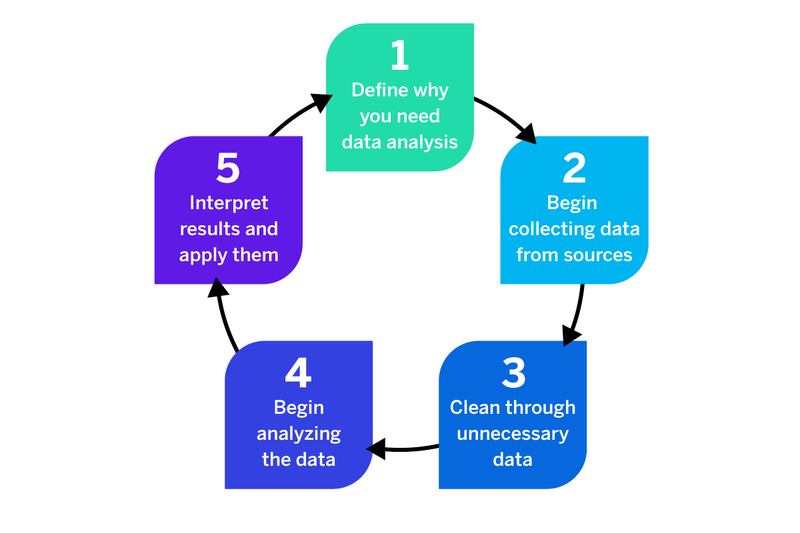
The Loop:
- Define why you need the analysis
- Collect data from sources
- Clean away unnecessary data
- Analyze the data
- Interpret the results and apply them
Every new question is another trip around the loop.
The Problems with Traditional Workflows
❌ Cognitive overload - Generates overwhelming numbers of plots/tables
❌ Batch-oriented - No exploration, just predetermined queries
❌ Distances experts from data - Requires intermediary (data scientist)
❌ Cannot scale - Modern data volumes overwhelm traditional tools
❌ Result: The “yellow blob” problem
Even simple questions require generating dozens of individual plots, each manually programmed
The Problem with Current Tools
Current practice for domain experts:
- Load small slices into R, MATLAB, Stata, ArcGIS, Excel
- Write SQL queries or code to analyze subsets
- Generate individual plots manually
- Repeat for each new question
This is tedious, slow, and limiting
Why this fails:
❌ Tools can’t handle 170M trips
❌ Requires programming/database expertise
❌ Time-consuming and frustrating
❌ Distances experts from the data
❌ Hard to explore, compare, or follow up on patterns
Part 3: The Need for Interactivity
The Paradigm Shift
Static Visualization
Role: Presentation
- Answers questions the designer anticipated
- Fixed perspective
- One-way communication
Limitation: Cannot handle hundreds of millions of data points
Interactive Visualization
Role: Exploration
- Enables users to ask their own questions
- Dynamic perspectives
- “Dialogue with data”
Power: Query and filter to reveal patterns
The Visual Information Seeking Mantra
“Overview first, Zoom and Filter, then Details-on-Demand”
— Ben Shneiderman (1996)
1. Overview
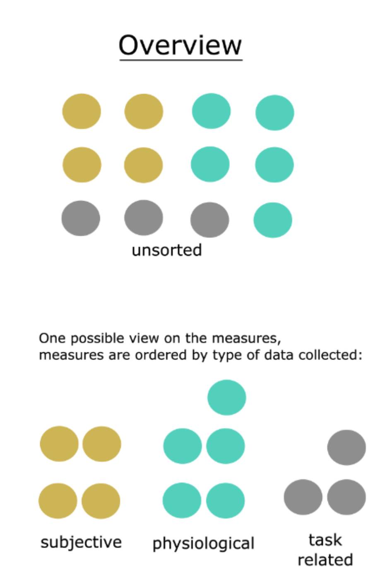
Start with the big picture (even if it’s a “yellow blob”)
2. Zoom & Filter
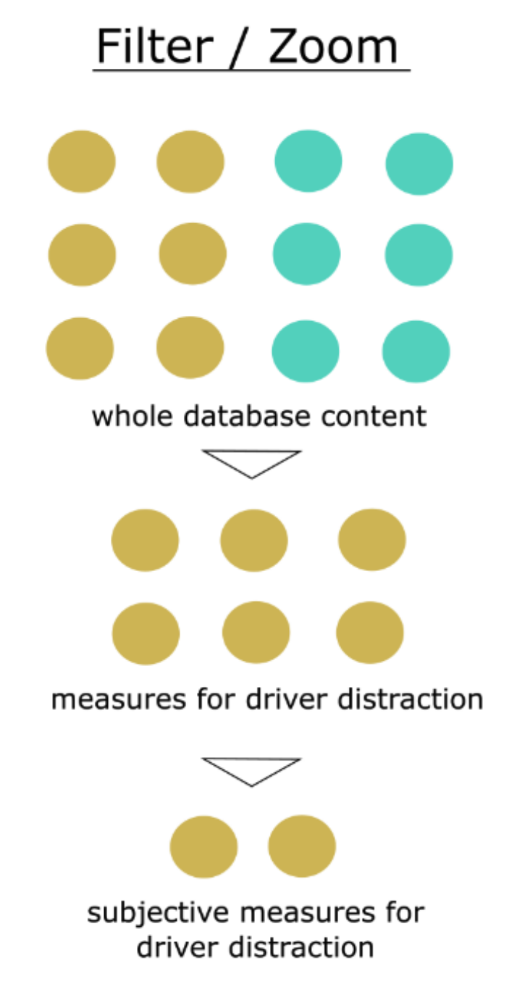
Focus on items of interest
3. Details-on-Demand
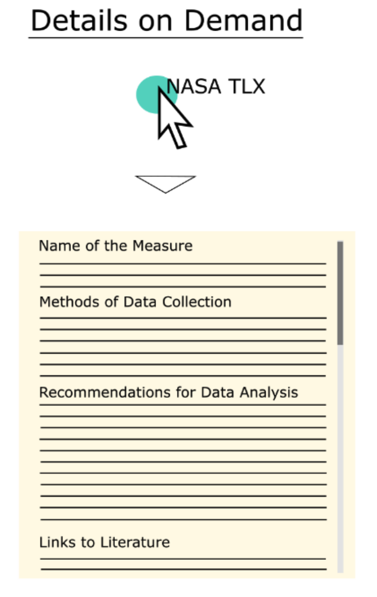
Get specifics when needed
Illustrations from a catalogue of driver-distraction measures (not TaxiVis); Shneiderman, B. (1996). The Eyes Have It. IEEE Symposium on Visual Languages.
Why Interactivity Matters
- Performance is critical
- Even 500ms latency significantly reduces exploration, observations, and hypothesis generation
- Sub-second response enables iterative analysis
- Perception over cognition
- Well-designed systems let you see patterns rather than calculate them
- Visual queries are faster than SQL
- Empowers domain experts
- No programming required
- Direct manipulation of visualizations
- Experts can explore data themselves
Research shows that even a half-second delay dramatically impacts analysis quality.
Part 4: Enter TaxiVis
The NYC Taxi Dataset
The Data:
- 13,000 taxis
- 500,000 trips/day
- 170 million trips/year
Each trip includes:
- Pickup/dropoff locations & times
- Distance traveled
- Fare amount
- Tip amount
What can taxi data tell us?
- Economic activity and human behavior
- Mobility patterns across the city
- Response to major events (hurricanes, holidays)
- Social inequalities in service
Challenge: How do we make sense of this data?
Taxi Patterns and Anomalies
One dataset shows weekly rhythm, holiday dips, storms and street events.
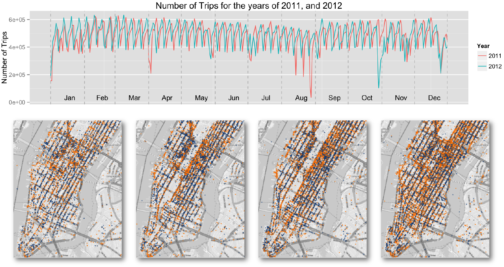
Daily taxi trips in 2011 and 2012 (top) and map snapshots of pickups and dropoffs (bottom)
Part 5: Design Requirements
What We Need (From Domain Experts)
Query Needs:
- Understand dynamics
- “How do patterns vary over space and time?”
- Explore events
- “What happened during Hurricane Sandy?”
- Compare regions
- “Midtown vs. Harlem taxi frequency?”
- Study movement
- “Where do people go from JFK?”
System Requirements:
- Interactive - Sub-second response times
- Expressive - Support complex spatio-temporal queries
- Usable - No SQL or programming required
- Scalable - Handle all 170M trips, not samples
- Comparative - Easy to compare regions and time periods
Part 6: The Visual Query Model
Core Idea: Direct Manipulation
Let users query data through direct manipulation of visualizations
Spatial
Where?
- Pickup regions
- Dropoff regions
- Draw polygons on map
Temporal
When?
- Time ranges
- Recurrence patterns
- Day of week
Attribute
What?
- Fare amount
- Distance
- Trip duration
Instead of writing SELECT * FROM trips WHERE..., you draw on a map
Visual Representation of Queries
A query is a set of colored constraints
- Polygon on the map = a spatial constraint (start or end region)
- Arrow between regions = a directional constraint (origin → destination)
- Time widget = a temporal constraint
- Attribute ranges = fare, distance, duration
Color ties it together
- Each query has its own color
- That color tags the query’s line in every chart
- A query can be a union of simpler ones, for example a polygon plus an arrow
- To compare, put several queries in the same view
Part 7: TaxiVis Interface
The Complete System
- A. Time widget: start, end, step size; regular or recurrent selection
- B. Map: draw polygons and arrows
- C. Tool bar: pickups / dropoffs / both, arrows, group, export, attribute exploration
- D. Data summary: time series, histogram or scatter plot, one line per query
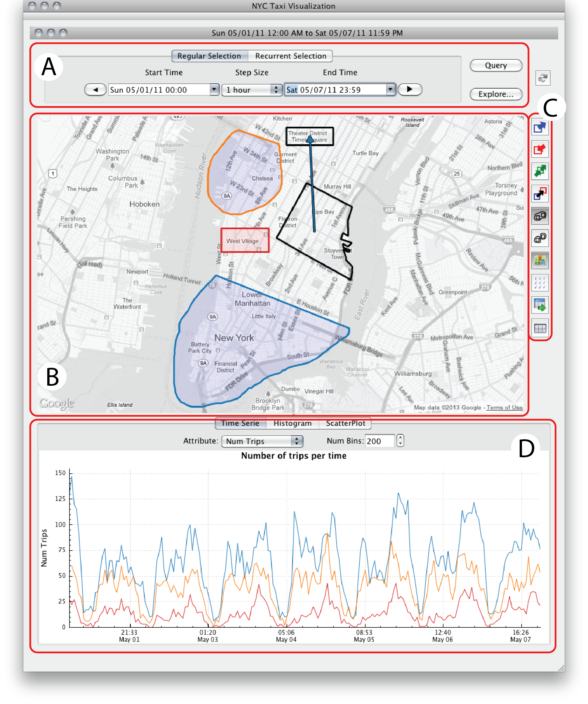
Ferreira, N., Poco, J., Vo, H. T., Freire, J., & Silva, C. T. (2013). Visual exploration of big spatio-temporal urban data: A study of New York City taxi trips. IEEE TVCG. doi:10.1109/TVCG.2013.226
Part 8: Visual Queries in Action
Example: Airport Comparison
“How do trips from Manhattan to JFK and LaGuardia differ on a Sunday vs. a Monday?”
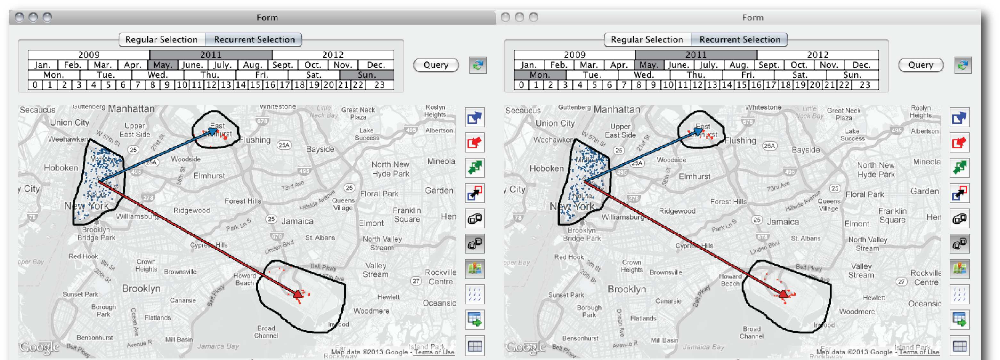
Two linked TaxiVis windows: the same Manhattan-to-airport query for Sundays (left) and Mondays (right)
The Results & Discovery
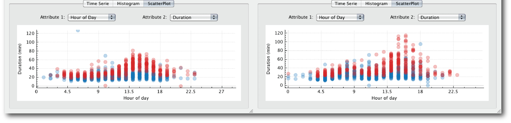
- Each dot is a trip: hour of day vs. duration, colored like the arrows (red = JFK, blue = LGA)
- Discovery: Monday afternoon trips to JFK are much longer, with the longest reaching about 110 minutes vs. about 80 on Sunday
- Implication: an economic disincentive for drivers to accept airport trips
Part 9: Query Expressiveness
Peuquet’s Triad Framework
All three fundamental spatio-temporal query types:
when + where → what
“What taxis were in Midtown at rush hour?”
when + what → where
“Where were high-fare trips on New Year’s Eve?”
where + what → when
“When do trips to airports peak?”
Plus: Query Composition
- Queries can be refined, combined, compared
- Results can be visualized multiple ways
- Supports both atomic queries and complex queries (unions)
Part 10: Making It Interactive
The Performance Challenge
The Problem:
- 170M trips = traditional databases too slow
- PostgreSQL: 24 seconds for 100k-trip query
- SQLite: 85 seconds for same query
- Goal: Sub-second response
The TaxiVis Solution:
- Custom k-d tree index
- 30GB vs. 200GB for PostgreSQL
- Build time: 28 min vs. 13 hours
- Query time:
- 2 seconds for 100k trips
- 0.2s for 1k trips
- Adaptive level-of-detail rendering
- Smart heat maps and aggregation
Part 11: Visualization Techniques
The “Yellow Blob” Rendering Problem
The Challenge:
- 500,000 trips/day as a point cloud = complete clutter
- Can’t see patterns, just noise
- Traditional scatter plots fail at this scale
We need multiple visualization strategies
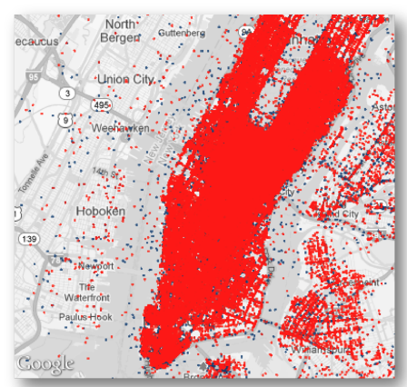
Solution 1: Adaptive Level of Detail (LOD)
Strategy: Render only what you can see
- Sort points along a Z-order curve, build a binary tree
- The first n elements are a hierarchical subsample of size n
- n scales with the zoom level
Result: a readable sample at every zoom level
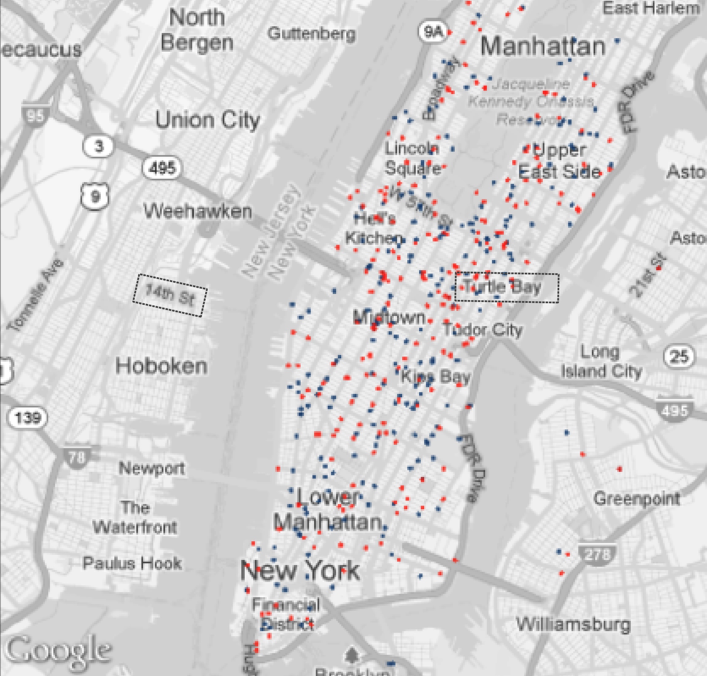
Solution 2: Heat Maps and Neighborhood Maps
Continuous Heat Maps
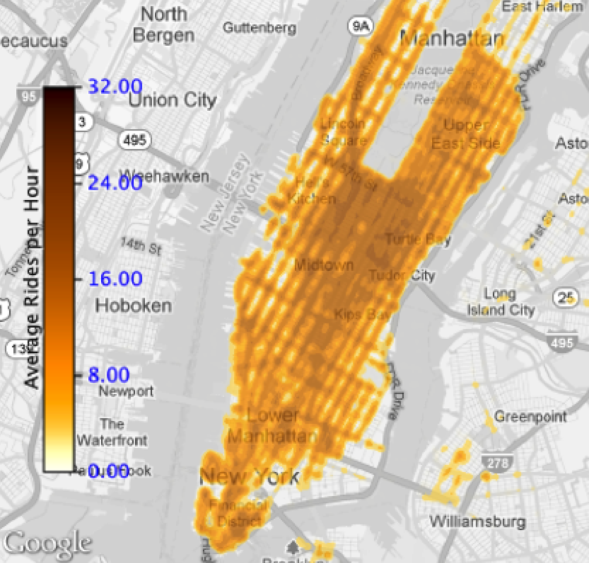
- Pixel-based density, darker = more activity
- Shows the overall distribution
Neighborhood Maps
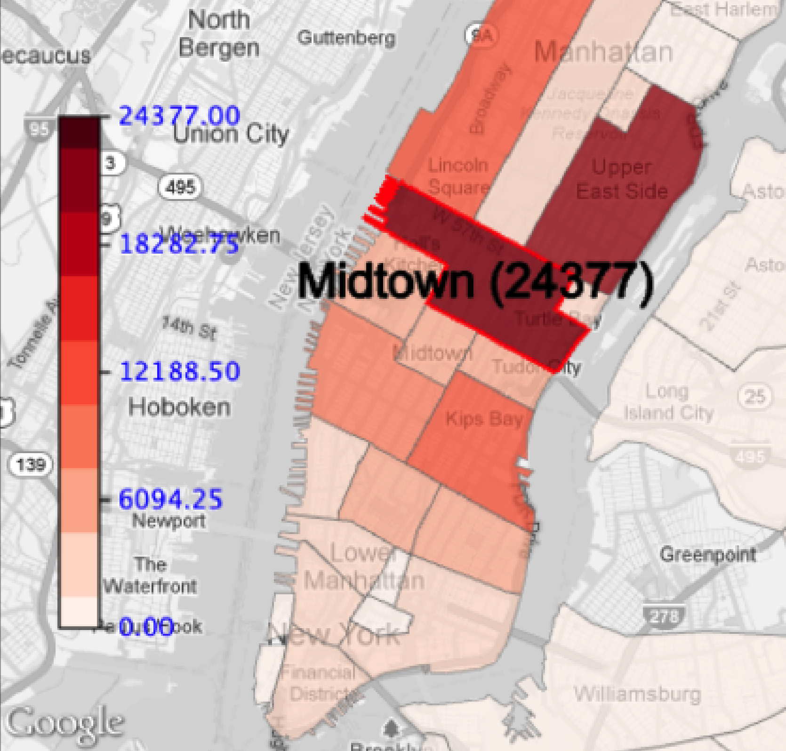
- Aggregate by meaningful regions
- Select a region to read its exact count
When to use: heat maps for overview and patterns, LOD for individual trips, neighborhood maps for comparing defined regions
Solution 3: Multiple Coordinated Views
The Comparison Problem:
- “How do Sundays differ from Mondays?”
- “JFK vs. LGA patterns?”
- “This year vs. last year?”
Solution:
- Side-by-side views
- Each view = one query (color-coded)
- Synchronized spatial extent
- Linked plots and summaries
- Interactive refinement
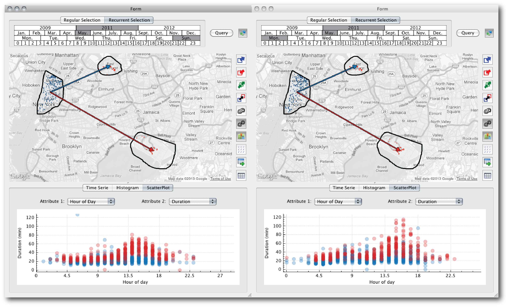
Part 12: Linked Views & Brushing
Core Concept: Brushing and Linking
Actions in one view are reflected in all other views
This creates a “dialogue” where you can ask questions by interacting with any visualization component, and all views update to answer your question.
Example: Spatial Selection → Temporal Pattern
“What is the temporal pattern for trips from JFK Airport?”
Linked Views in Action: Regions on the Map, Lines in the Chart
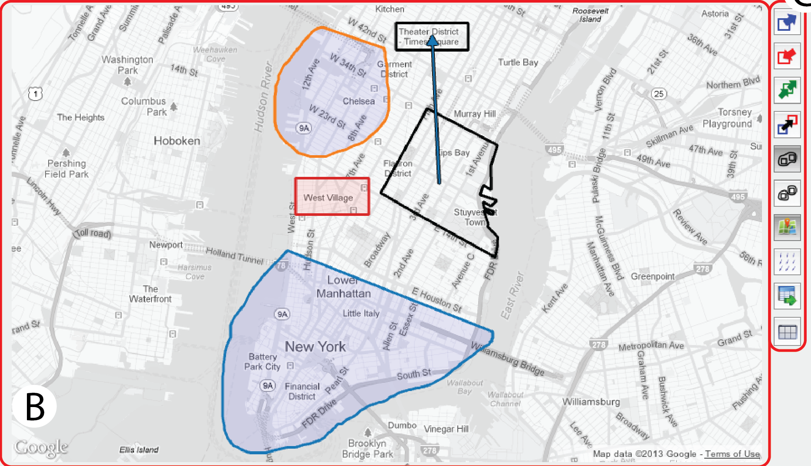
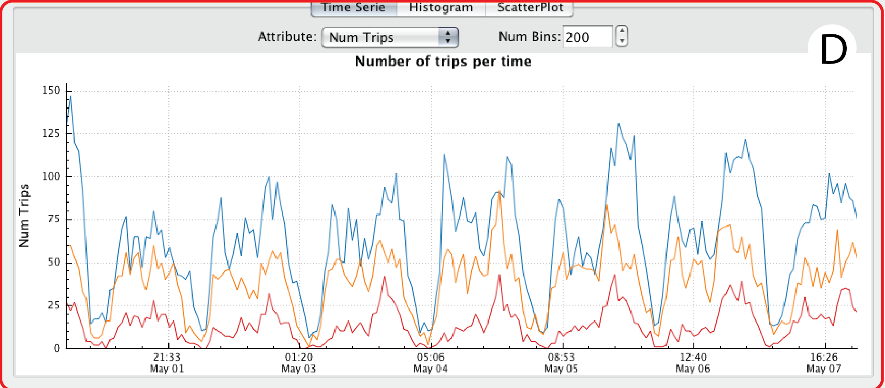
Draw regions on the map and the chart answers: one line per query, matched by color.
The Power of Bidirectional Linking
The linking works in both directions
- Spatial → Temporal: Select a region → see temporal patterns
- Temporal → Spatial: Set a time window → the map shows only those trips
This bidirectional dialogue enables exploratory analysis that would be impossible with static visualizations.
Part 13: Temporal Queries
Temporal Slicing: Time → Space
The Question:
“Where are the trips in this hour of the day?”
The Interaction:
- Set start time, end time and step size in the time widget
- The map redraws with only the trips in that window
- Step forward or back one step at a time
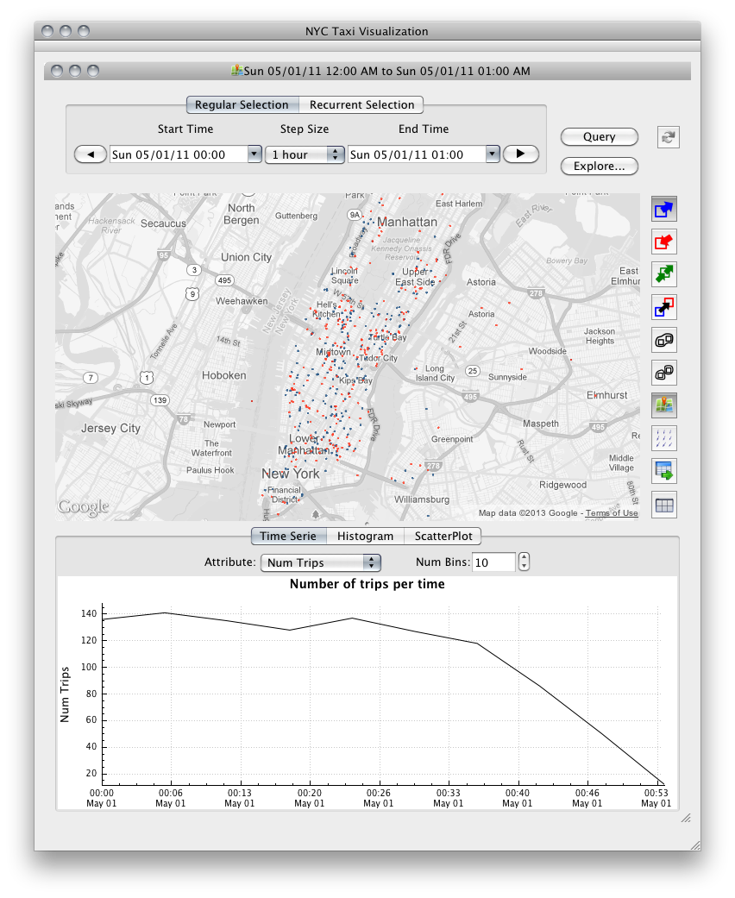
Advanced Temporal Queries: Recurrent Selection
Select recurring time periods: a pattern, not a single time slice.
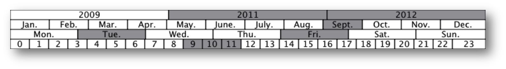
Shaded here: September of 2011 and 2012, Tuesdays and Fridays, 9-11 AM. Other examples: all Mondays 8-10 AM, every Saturday night, weekday rush hours only.
This reveals periodic behavior: the heartbeat of the city.
Part 15: Origin-Destination Queries
The Most Powerful Query: Flows
Asking about movement between specific locations
Traditional Approach:
Complex, requires knowing SQL and field names
TaxiVis Approach:
Draw an arrow
Simple, visual, intuitive
This is what we mean by “visual query”—you draw your question, the system answers. You have already seen it: the blue and red arrows in the airport query.
Visual Queries: Why They Matter
- Lower cognitive load
- No need to remember field names or syntax
- Direct manipulation of the data representation
- Immediate feedback
- See results instantly as you interact
- Iterate quickly through hypotheses
- Support exploration
- Encourages “what if” questions
- Makes serendipitous discovery possible
- Democratize analysis
- Analysts without SQL/programming skills can explore
- Domain experts can directly investigate questions
The visualization is the interface.
Part 16: Case Study 1 - Social Inequality
Question: “Are some neighborhoods underserved by taxis?”
The Analysis:
- Compare taxi activity across four areas: Harlem (with East Harlem), Upper East Side, Midtown, and Downtown (the Villages)
- Pickups and dropoffs over one week in May 2011
Keep in Mind:
- These are counts, not rates
- Regions differ in size and population
- What would you normalize by?
The Discovery: Over 10x Difference
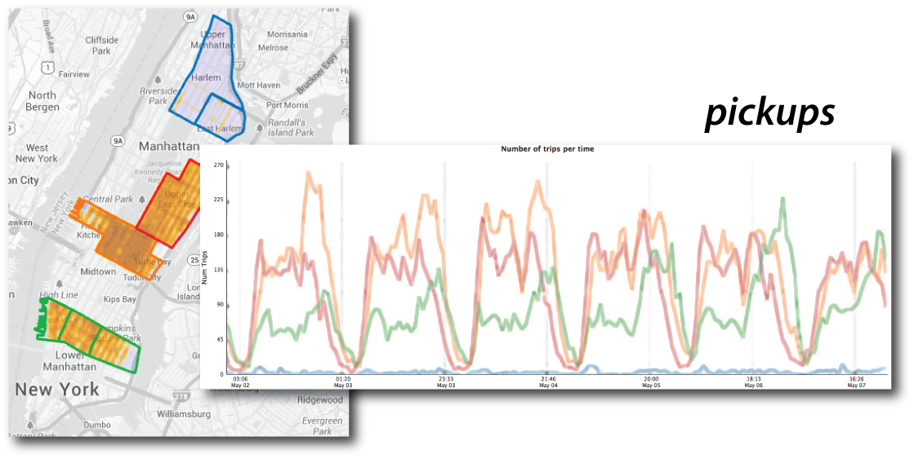
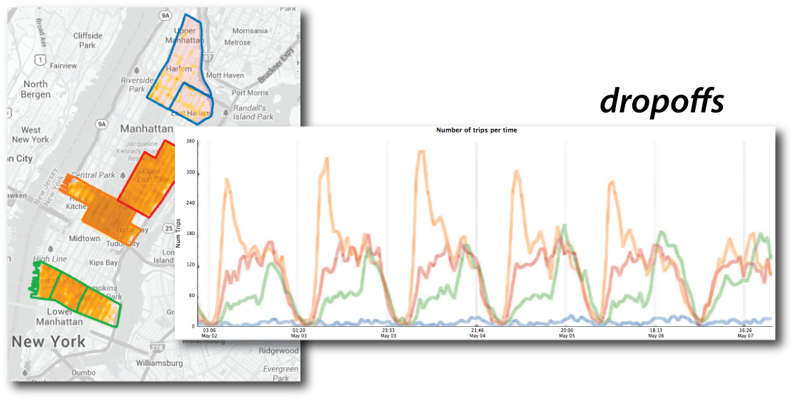
Harlem (blue) sits more than an order of magnitude below Midtown, in pickups and in dropoffs.
Follow-Up Investigation
The exploration followed a natural path:
- Initial pattern: Harlem has far fewer taxi trips
- Hypothesis: Is this an economic issue?
- Investigation 1: “Are tips different in Harlem?”
- Discovery: Tips per trip are higher (and noisy: few trips)
- Investigation 2: “Is fare per mile different?”
- Discovery: Consistently lower fare per mile
- Insight: Less economic incentive for taxis to be in Harlem; the higher tips may be a way to reward drivers who go
Follow-Up Investigation: The Two Charts
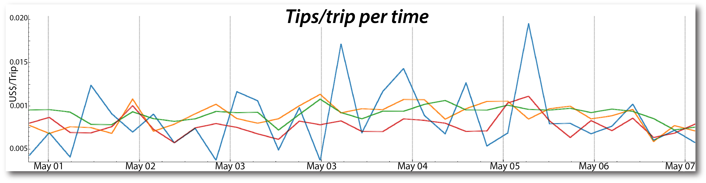
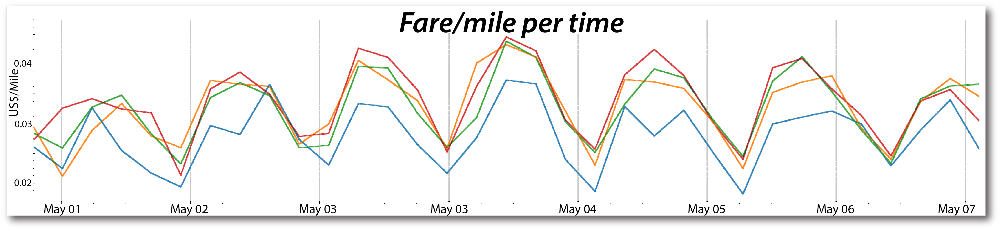
Blue = Harlem. Tips per trip run higher but noisily (few trips); fare per mile is lower.
Part 17: Case Study 2 - Transportation Hubs
Question: “How do people move through NYC’s transportation infrastructure?”
The Setup:
- Compare JFK, LGA, Penn Station, Grand Central
- Use grouping to combine regions
- Examine pickup patterns over one week
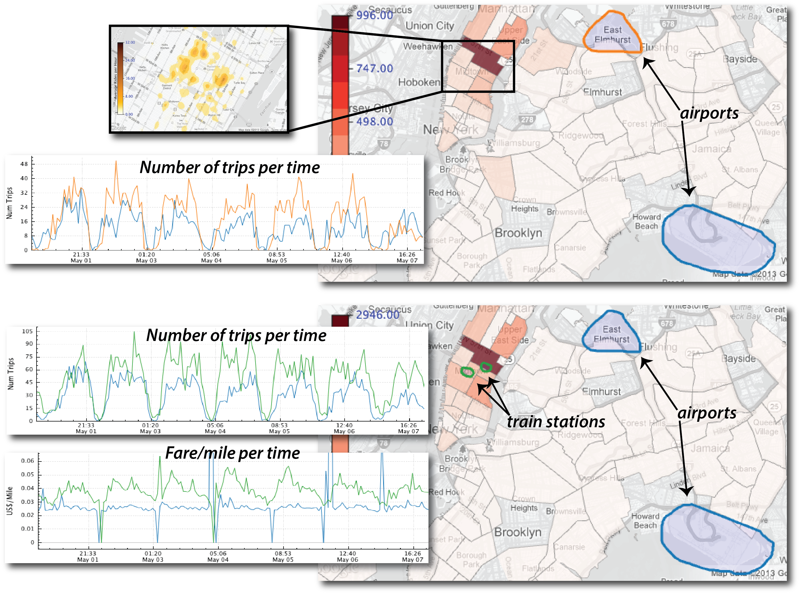
Key Findings
More pickups at LGA than JFK on most days
Train stations >> airports for pickups
Weekday pattern: train-station pickups roughly constant Mon-Thu, falling Friday to a low on Saturday
- Reflects commuter behavior
Rush hour problem: airport trips take much longer around 3-5 PM; fare per mile is higher within Manhattan
- Economic incentive to avoid airport trips
- Refusing rides is illegal, but a common practice for JFK
Part 18: Case Study 3 - Temporal Exploration
Time-Space Exploration
Feature:
- Select multiple time slices automatically
- Compare the same time across days, weeks or months
- Each slice gets its own map and its own colored line
Example: Memorial Day Analysis
- All Mondays in May 2011 and May 2012
- Nine maps, nine lines
Discovery: Memorial Day Pattern
Maps for each Monday (a) and one line per Monday (b): two lines stand apart.
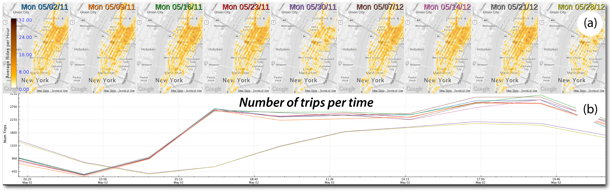
Nine May Mondays: maps (a) and trips per time (b)
- Discovery: Memorial Day (May 30, 2011 and May 28, 2012) has significantly fewer trips than the other Mondays
- Implication: Fleet size could be reduced on holidays to save costs
Part 19: Case Study 4 - Hurricane Sandy
Question: “How did Hurricane Sandy affect NYC?”
The Analysis:
- One week of taxi activity
- Sunday before through Saturday after
- Heat maps for each day
- Compare spatial patterns
The Timeline:
- Sunday (before): Normal activity
- Monday (hurricane hits): Virtually no taxis citywide
- Tuesday-Friday: Activity returns everywhere EXCEPT Lower Manhattan
- Saturday: Finally returns to normal
The Story the Data Tells
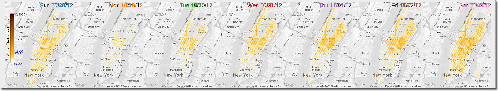
Why? Lower Manhattan had a multi-day power outage. You can see it on the map.
Comparison to Hurricane Irene
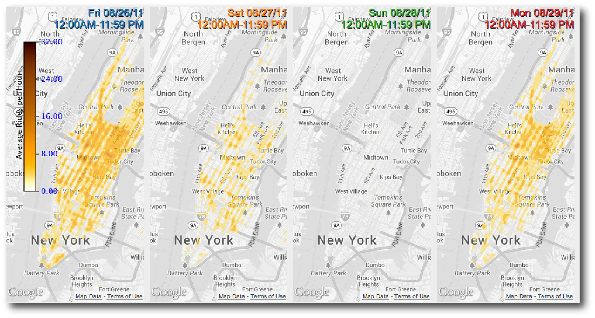
- Shorter disruption but more complete
- Only 1,076 trips on the hurricane day (vs. an average of about 500,000)
- Faster recovery
Part 20: What We Learned
Design Insights from Building TaxiVis
- Visual queries work
- Early users found it usable without SQL or programming
- No SQL, no programming required
- Performance is non-negotiable
- Sub-second response enables exploration
- Adaptive rendering essential for large results
- Multiple views are essential
- Comparison is core to analysis
- Side-by-side queries, synchronized views
- Linked plots and maps
- Query composition is powerful
- Build complex queries from simple ones
- Grouping, refinement, generalization
Part 21: Real-World Impact
Who’s Using TaxiVis?
Users:
- Designed from interviews with 5 NYU researchers: 2 traffic engineers and 3 economists
- Deployed to a few domain scientists at NYU
- Data provided by the NYC Taxi & Limousine Commission
- Feedback “very positive”; larger usability study planned
What They’ve Learned:
- Social inequalities in taxi service (Harlem)
- Economic incentives affecting driver behavior
- Impact of major events on city mobility
- Transportation hub usage patterns
Beyond Taxis:
- Model applies to other origin-destination data
- Generalizes to other spatio-temporal datasets
- Principles useful for any urban data exploration
Part 22: Key Takeaways
The Big Ideas
- Urban data is fundamentally spatio-temporal
- Space, time, and attributes all matter
- Need to explore interactions, not just individual dimensions
- Static visualization is not enough
- Interactivity transforms presentation into exploration
- “Dialogue with data” through visual queries
- Design for domain experts, not data scientists
- Visual operations instead of code
- Direct manipulation over programming
- But don’t sacrifice expressiveness
- Performance enables exploration
- Sub-second response changes how people think
- Specialized systems beat general solutions
- Trade generality for interactivity
Part 23: From TaxiVis to Urban Analytics
The Broader Vision
TaxiVis is One Example
Other urban data:
- Bikeshare systems
- 311 service calls
- Building permits
- Transit ridership
- Crime reports
- Traffic sensors
Same challenges: Scale, complexity, spatio-temporal nature
The Visual Analytics Framework
- Visualization: Multiple representations and query models
- Data Analysis: Topology, ML, pattern detection
- Data Management: Specialized indices, GPU acceleration
Moving to 3D
Cities are vertical, not just horizontal
- Shadow analysis
- Views and sight lines
- Sky exposure
- Building massing
Next Lecture:
We’ll extend these ideas to 3D urban visualization and the Urbane framework
Same principles apply: interactive, visual, scalable
Summary
The Visual Analytics Pipeline for Urban Data
What We’ve Covered Today:
The Problem:
- Urban data is big, complex, spatio-temporal
- Traditional tools don’t scale
- Confirmation vs. exploration gap
The Solution:
- Visual query models for direct manipulation
- Interactive performance through specialized systems
- Multiple visualizations for different questions
- Comparison through coordinated views
The Result:
- Domain experts can explore without programming
- Discoveries about social inequality, economics, events
- Real impact on city operations and policy
Try It Yourself - Exploration Exercise
If you had access to TaxiVis, what would you explore?
Think about:
- A neighborhood you’re curious about
- A time pattern (weekday vs. weekend, holidays, events)
- A comparison (this year vs. last year, two locations)
- A hypothesis about urban behavior
Discussion:
- What question would you ask?
- What spatial regions would you select?
- What time slices would you compare?
- What would you expect to find?
Optional: Build Your Own with Autark
Autark (autark.js): urban visual analytics in the browser
- Website: autarkjs.org (MIT license)
- Install:
npm install @urban-toolkit/autk - Serverless: load, process and visualize geospatial data entirely client-side
- autk-db: geospatial queries on OpenStreetMap, GeoJSON, GeoTIFF and CSV
- autk-map: 2D and 3D maps rendered with WebGPU
- autk-plot: interactive D3 charts linked to the map
- autk-compute: custom analysis on GeoJSON
How it connects to today
- Map + linked charts = the brushing and linking idea, now something you can build
- The gallery already has linked views, and GPU analyses (sky exposure, visibility, view score) that preview next week’s 3D class
- Start with the Observable tutorial or the gallery
- Optional; a good fit if your mini-project uses urban data
- Maps and GPU analyses need WebGPU: Chrome or Edge 113+, Safari 26+, Firefox 141+
Optional: Try TaxiVis Yourself
The revamped TaxiVis is open source
- Repository: github.com/vida-nyu/taxivis
- A desktop application (C++, Qt 6, OpenGL), not a web page
- Build from source with CMake; instructions for macOS (Homebrew) and Ubuntu are in the README
- Same ideas as today: draw regions and arrows on the map, set time windows, linked time series, histograms, scatter plots and heat maps
What to expect
- A small sample of 10,000 trips is bundled, enough to check the build
- To explore for real, you prepare a month of NYC TLC trip data (about 14-15 million trips) with the README’s pipeline
- Entirely optional, and it takes some setup time
- The screenshots in today’s lecture are from the 2013 version, so the new interface will look different
This Week
- Mini-Project 2 begins: Temporal visualization (due Nov 19)
- Exercise 9: Urban data exploration and visual queries (due Nov 5)
- Reading: Ferreira et al. (2013), Visual Exploration of Big Spatio-Temporal Urban Data, IEEE TVCG
- Lab: building interactive spatio-temporal visualizations in D3
- Optional: try the revamped TaxiVis (build from source)
- Optional: explore Autark, our browser-based urban analytics toolkit
Questions?
Next week: 3D & Immersive Urban Visualization
Preview:
- Urbane framework for 3D urban planning
- Interactive impact analysis (shadows, views, sky exposure)
- Performance-driven architectural design
- When to use 3D (and when not to)